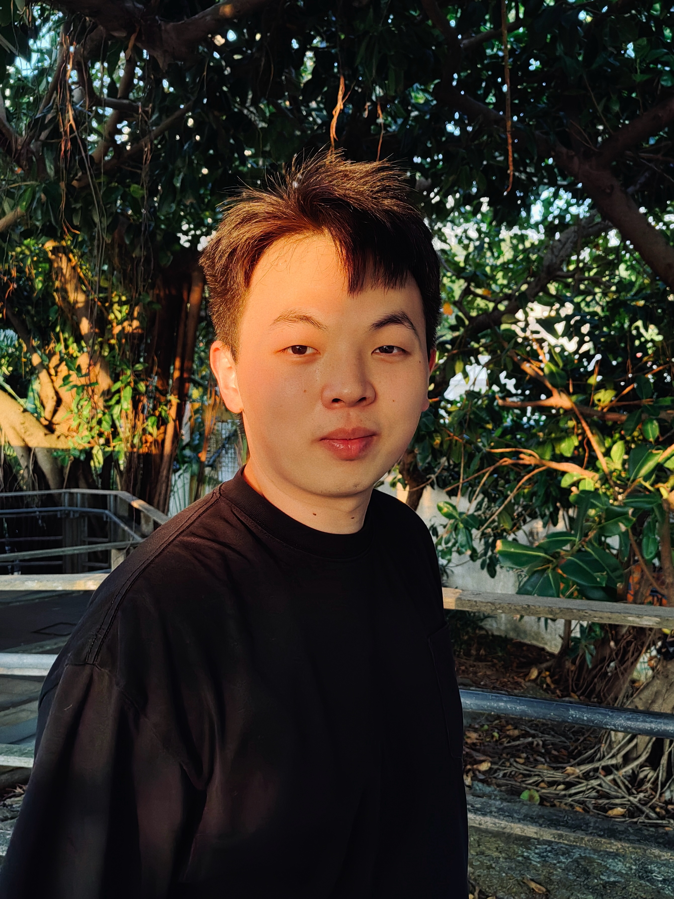
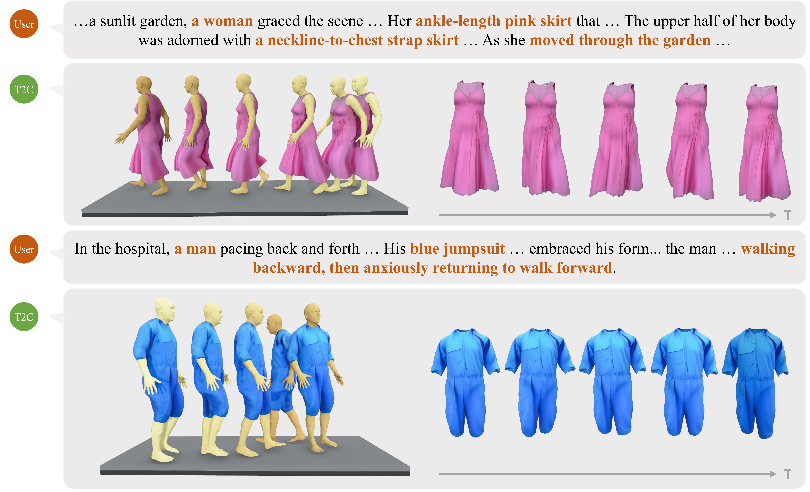

Yanxi Du 杜炎锡
duyanxi1004 at outlook dot com
I am an MPhil student at The Chinese University of Hong Kong, Shenzhen, advised by Prof. Xiaoguang Han. My research interests include embodied AI, 3D vision, and human-centric AI.
Previously, I received my B.Eng. in Robot Engineering from Southeast University, under the supervision of Prof. Yangang Wang. From September 2024 to February 2025, I was an exchange student at the Computer Vision Lab, Osaka University, working with Prof. Yasuyuki Matsushita and Associate Prof. Fumio Okura.
My current research interests focus on enabling robots to learn more effectively from human and building more realistic virtual worlds.
I am actively looking for collaborators and internship opportunities in embodied AI.
Updates
- Jan 2026 Admitted to CUHK–Shenzhen as an MPhil student.
- Oct 2025 Joined CUHK–Shenzhen as a research assistant.
- Jun 2025 Graduated from Southeast University; my thesis was recognized as an Excellent Bachelor's Thesis.
- May 2025 T2C: Text-guided 4D Cloth Generation was accepted by ACM TOMM.
- May 2024 Admitted to Osaka University as an exchange student.
Research

T2C: Text-guided 4D Cloth Generation
Zhipeng Yu, Zimeng Zhao, Yanxi Du, Yuzhou Zheng, Binghui Zuo, Yangang Wang
ACM Transactions on Multimedia Computing, Communications, and Applications (2025)
T2C introduces a multilayered clothing representation and a physics-based animation pipeline to generate clothed human motion from text guidance.
Education & Experience
Since Jan 2026MPhil Student, The Chinese University of Hong Kong, Shenzhen
Oct 2025 – Jan 2026Research Assistant, The Chinese University of Hong Kong, Shenzhen
Sep 2024 – Feb 2025Exchange Student, Osaka University
Aug 2021 – Jun 2025B.Eng. in Robot Engineering, Southeast University
Honors & Awards
Jun 2025Excellent Bachelor's Thesis (Top 15%), Southeast University
Jun 2024SEU Undergraduate Scholarship in Social Work
May 2023Outstanding Individual in Social Practice, Southeast University